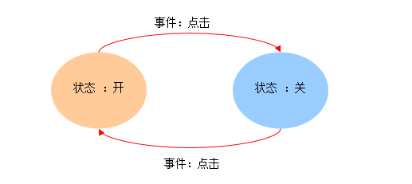

组件实例的外观及行为通过使用props变量进行定制就可以了
解释
因为在任何时刻，组件 实例的表现都仅仅取决于外部传入的props属性，与 它自身之前的表现毫无关系，即，它本身没有任何记忆
让一个组件拥有记忆能力，意味着它不仅能对外界的刺激产生反应（通过props 传入的数据、或用户的交互事件），也能根据自身的状态对同样的刺激做出 不同的反应
比如示例中的切换开关，它可以响应用户的点击事件
·如果当前状态是关，那么它就 切换到开的状态（显示开状态的图片）
·而如果当前状态是开，那么它就切换到关的 状态（显示关状态的图片）
React的组件的确引入了状态机的概念，通过将组件划分为不同的状态，使组件具有 了一定的记忆能力
每个React组件实例都有一个state变量，用来保存组件的当前状态
可以在 任何时刻使用this.state读取当前状态
组件的实现者应当实现一个getInitialState()方法来设置组件的初始状态
getInitialState()方法必须返回一个JSON对象或空值null， 这意味着即使你只需要一个简单的标志作为状态，比如true或false，也要把它放到JSON对象里
尽管可以使用this.state来直接设置组件当前状态，但React要求我们使用 setState()方法来进行状态设置
这是因为，setState()方法会自动 地重新渲染组件
参数currentState是一个JSON对象
不必包含状态变量的所有字段，setState()方法会 将这个参数值与当前状态this.sate进行合并，结果作为状态变量的新值